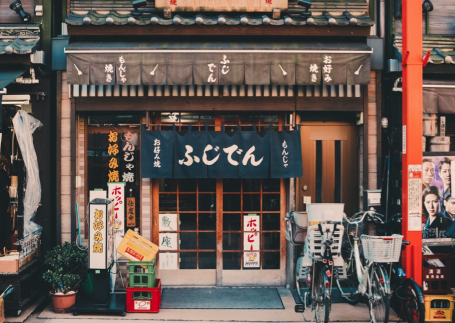
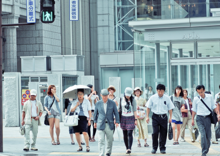
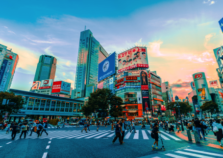

<body style="background-color:black;">
            <p style="color:white;">logo</p>
            
            <p style="color:white;">Oval</p>
            
            <p style="color:white;">Shape-arrow</p>
            
            <p style="color:white;">icon-a</p>
            
            <p style="color:white;">icon-b</p>         
             
            <p style="color:white;">icon-c</p> 
             
            <p style="color:white;">background</p> 
            
            <p style="color:white;">Kyoto</p> 
            
            <p style="color:white;">Mount Fuji</p> 
            
            <p style="color:white;">Niigata</p> 
            
            <p style="color:white;">sapporo</p> 
            
            <p style="color:white;">Tokyo</p> 
            
            
            
            
            
                  
</body>


